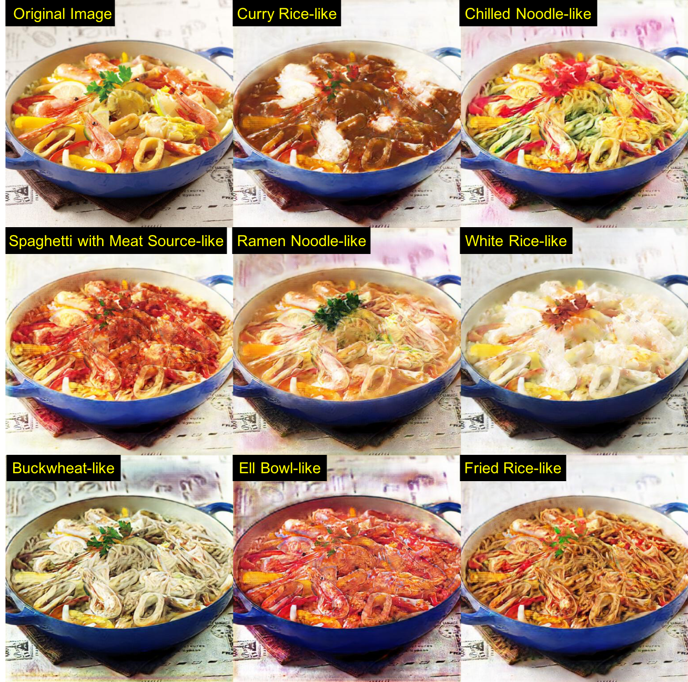
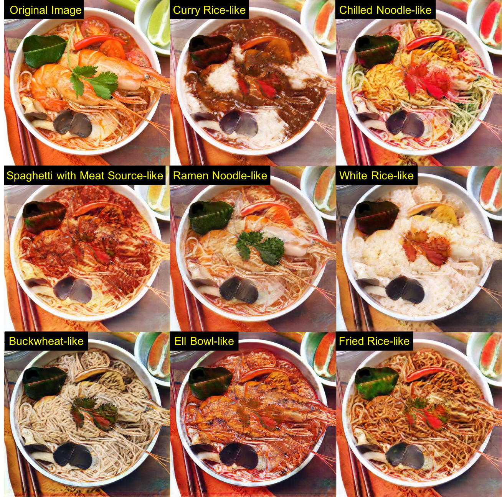
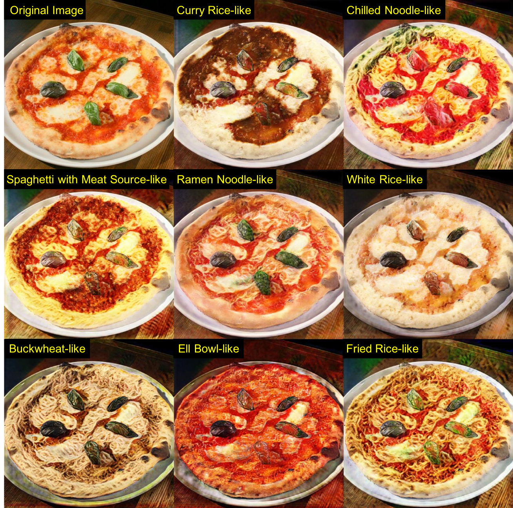
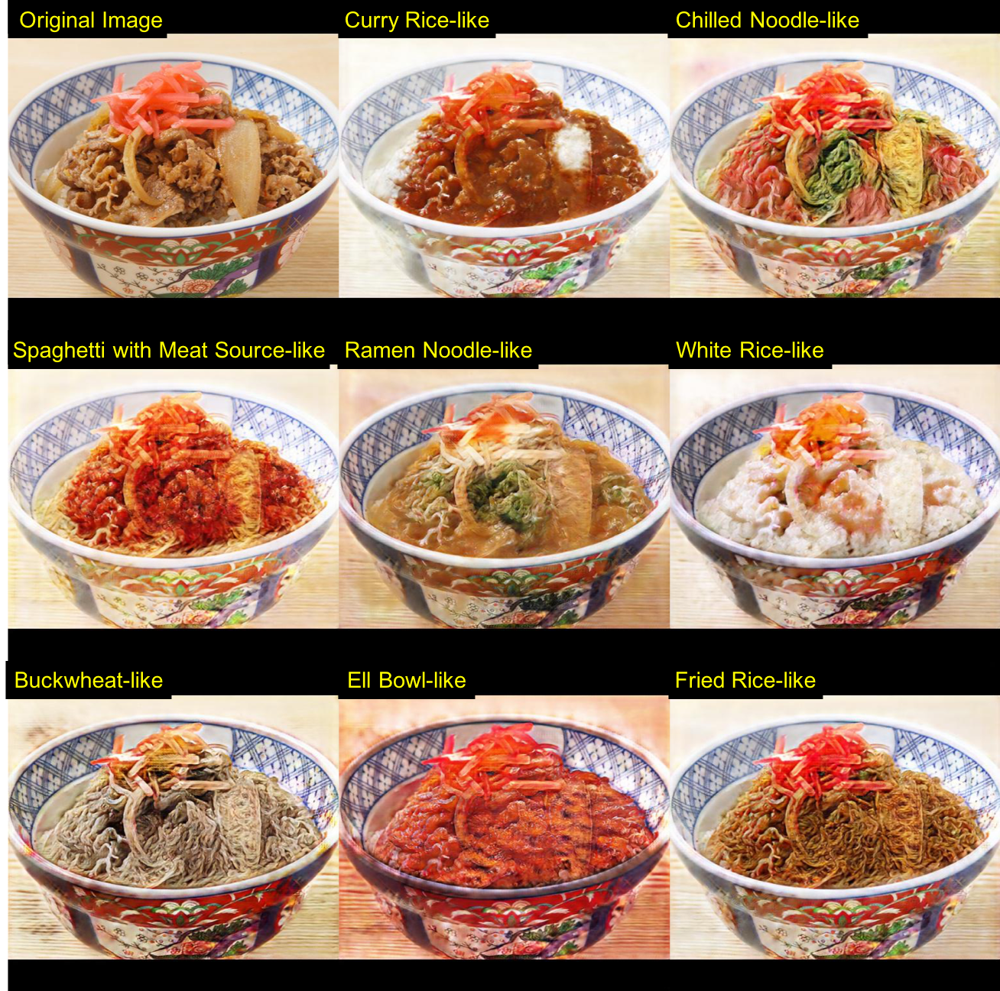
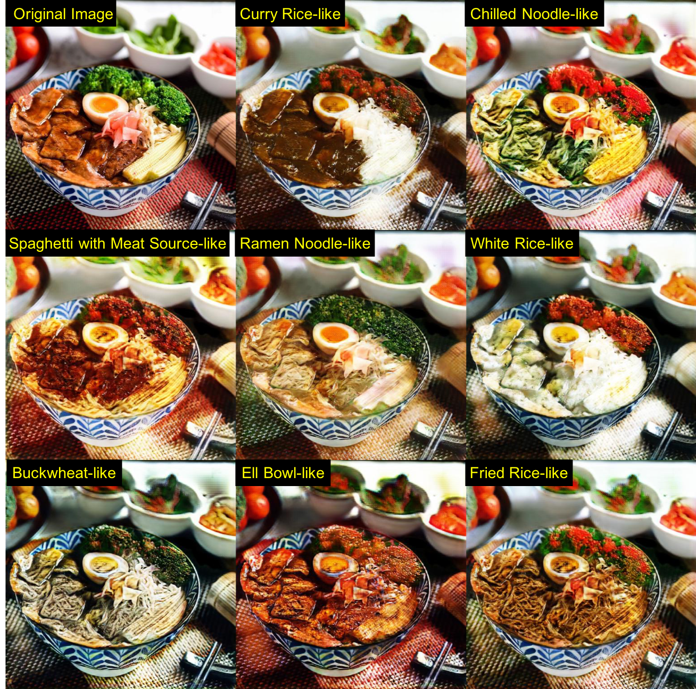
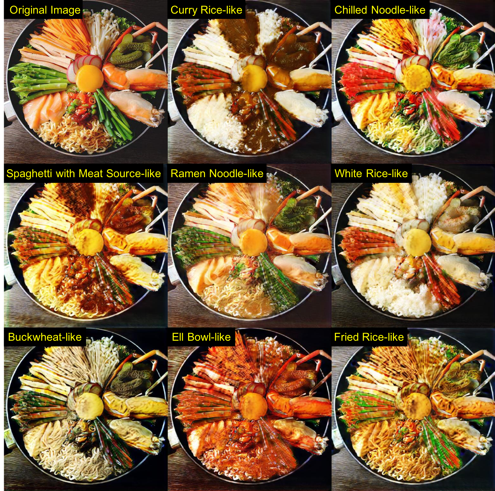
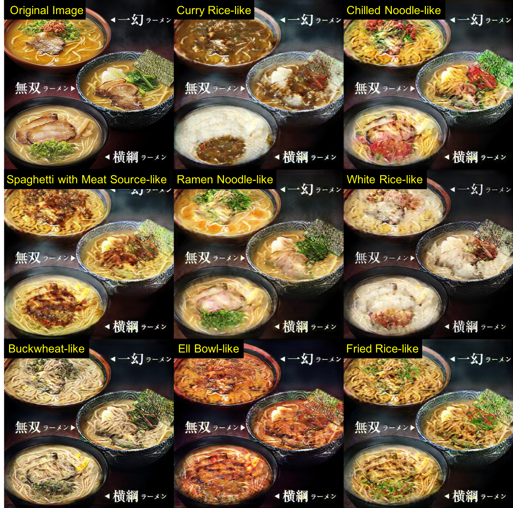
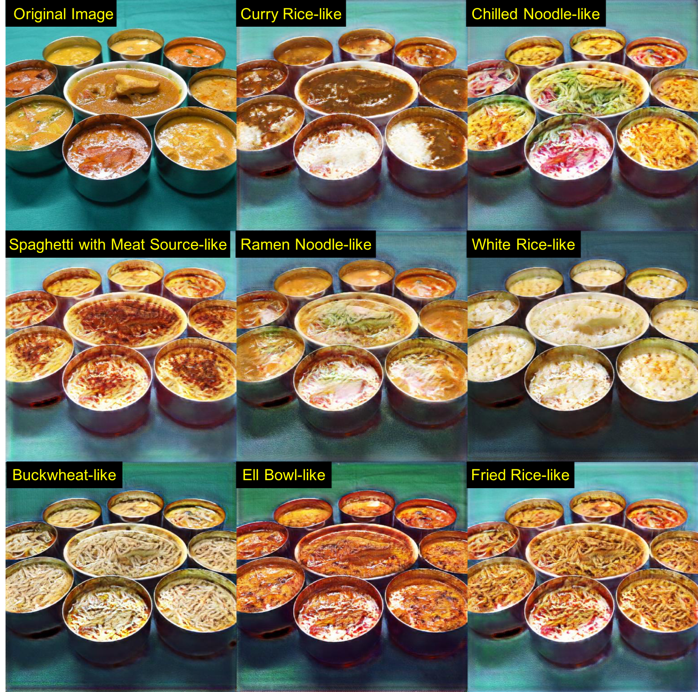

Magical Rice Bowl: A Real-time Food Category Changer
Ryosuke Tanno Daichi Horita Wataru Shimoda Keiji Yanai
Department of Informatics, The University of Electro-Communication
In ACM MM 2018
Abstract
In this paper, we demonstrate "Real-time Food Category Change" based on a Conditional Cycle GAN (cCycle GAN) with a large-scale food image data collected from the Twit- ter Stream. Conditional Cycle GAN is an extension of Cy- cleGAN, which enables "Food Category Change" among ten kinds of typical foods served in bowl-type dishes such as beef rice bowl and ramen noodles. The proposed system enables us to change the appearance of a given food photo according to the given category keeping the shape of the given food but exchanging its textures. For training, we used two hundred and thirty thousand food images which achieved very natural food category change among ten kinds of typical Japanese foods: ramen noodle, curry rice, fried rice, beef rice bowl, chilled noodle, spaghetti with meat source, white rice, eel bowl, and fried noodle.
Paper
demo_mm18_final.pdf, 2018.
Citation
Ryosuke Tanno, Daichi Horita, Wataru Shimoda and Keiji Yanai. "FoodChangeLens:CNN-based Food Transformation on HoloLens", in Proc. of ACM International Conference Multimedia, 2018. Bibtex
Another Application
Food Transfer Image Museum on HoloLensShu Naritomi made the above.
|
Food Image Transformation using HoloLensShu Naritomi and Takumi Ege made the above.
|
Computer Vision Art Gallery
In 2018, for the First Workshop on Computer Vision for Fashion, Art and Design, at the European Conference on Computer Vision (ECCV) in Munich, Germany, a call was put out for artworks dealing with computer vision technologies. We were chosen for Longlist Award on ECCV Art Workshop.
Paella |
Tom Yum Goong |
Pizza |
Beef Bowl |
Magical Rice Bowl !? |
Magical Rice Bowl !? |
Ramen |
Curry |
Ms. Koizumi Loves Ramen Noodles（Japanese Anime）
Ms. Koizumi Loves Ramen Noodles (ラーメン大好き小泉さん Rāmen Daisuki Koizumi-san) is a Japanese manga series by Naru Narumi. It began serialization in Takeshobo's Manga Life Storia magazine in September 2013. A live-action drama series adaptation aired from June 2015 to December 2016. A 12-episode anime television series adaptation co-animated by Studio Gokumi and AXsiZ aired in Japan between January 4 and March 22, 2018. (by wikipedia)

|
Related Work
Acknowledgement
This work was supported by JSPS KAKENHI Grant Number 15H05915, 17H01745, 17H05972, 17H06026 and 17H06100.